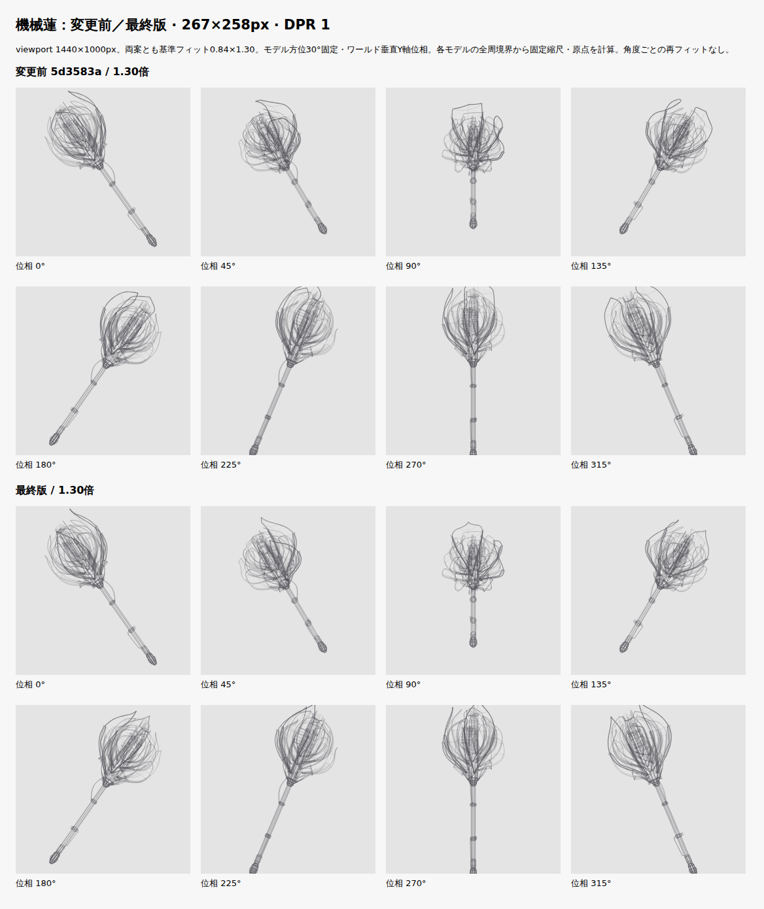
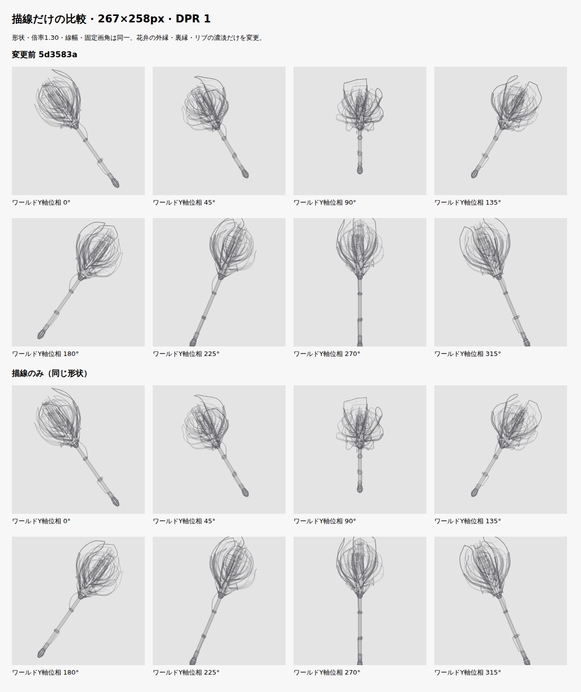
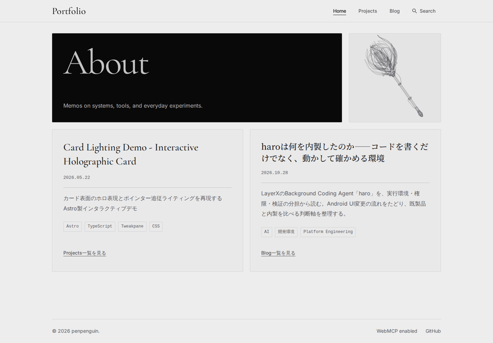

変更前は 5d3583a3d44bd77ffa16b431707ef77d8d7b240d。対象実装は 332edb18a2bed7ab34338baae21fdaccf3297bfd。通常のHomeは引き続き基準フィット0.84 × 固定1.30倍。19枚の花弁・3層、16秒のワールド垂直Y軸回転、初期モデル方位30°・初期左35°、パネル内クリップを維持しました。追加オフセット0。マージ・公開はしていません。
最初に形状を固定して描線だけを比較しました。花弁の外縁を一枚ごとに連続した濃さにし、手前の外・中層を強め、裏縁とリブを弱めています。次に主花弁2枚の腹から先端へ向かう幅の変化を調整。肩まで幅を保ち続ける形を改め、腹を丸く保ちながら徐々に収束させました。外層の先端高さ4.4／4.65と最大幅1.54／1.62は維持しています。
最初の先細り試作でも90°の上縁が平たく残ったため、単独表示で反りを確認。主花弁上側の径方向接線を−0.10、outer-4の先端半径を0.90→1.00、上部の反り制御を0.06→−0.12へ調整しました。90°では、尖端と肩の高さ差が-1.719→4.136 CSS pxとなり、丸い肩の上に尖端を読む形になっています。この数値だけで美観を判定せず、0／45／90／135／180／225／270／315°と連続回転を確認しました。
主花弁の幅最大は正規化位置0.48付近、0.8では最大幅の約半分。横断面のくぼみ、薄い厚み、機械の芯と開いた支持部を保ちます。首元は既存の段階配置を継続し、花弁裏縁の濃淡によって接続付近の重なりを整理しました。首元・柄・石突き・冷却・配線の形状ハッシュは変更前と一致しています。
| 項目 | 変更前 | 最終版 |
|---|---|---|
| 全長 | 9.65 | 9.65 |
| 花冠長 | 4.15 | 4.15 |
| 全周最大径 | 3.771 | 3.773 |
| 線分数 | 4,874 | 4,882 |
| 共有頂点数 | 4,154 | 4,162 |
線分は8本増。主花弁の幅最大位置へ正確なサンプル点を入れ替えた差で、花弁・支持部品の追加や一律の細分化はしていません。曲線の最大近似誤差は0.112 CSS px（実寸4枠・全周15°刻み、128分割の参照との比較）。

主軸上の同じ高さの点から花弁の腹へ向かう径方向ベクトルを固定姿勢へ変換し、カメラに対する前後関係を一枚ごとに評価します。19枚分の参照を初期化時に生成し、回転中は滑らかに重みを更新します。主花弁外縁0.58〜0.88、外・中層外縁0.30〜0.66、内層0.30〜0.56、裏縁0.22〜0.38、リブ0.14〜0.28。線幅は1.1／0.8／0.5 CSS pxのままです。機械部品の濃淡規則も維持しました。
各花弁外縁の1°あたり不透明度変化は最大0.003。位相による突然の切替・消去はありません。共有頂点の投影再利用、同一辺の重複除去、辺分割後の花弁識別情報を検証しています。

一周の連続比較HTML — Rawを保存しローカルブラウザーで開けます。変更前／描線だけ／最終版を同時に表示。通常の固定フィット、共通縮尺・原点、主要構造、1.00倍を切替可能です。本番Homeに比較UIは追加していません。16秒以上の連続実行記録。
| viewport（高さ1000px） | 実描画枠 | 前後・DPR | サイズ・形状・構造 |
|---|---|---|---|
| 1440px | 267×258px | 前後8方向 / DPR 2 | 1.00／1.30倍 / 同縮尺・同原点 / 主要構造／全線 |
| 1024px | 223×258px | 前後8方向 / DPR 2 | 1.00／1.30倍 / 同縮尺・同原点 / 主要構造／全線 |
| 390px | 348×238px | 前後8方向 / DPR 2 | 1.00／1.30倍 / 同縮尺・同原点 / 主要構造／全線 |
| 320px | 278×238px | 前後8方向 / DPR 2 | 1.00／1.30倍 / 同縮尺・同原点 / 主要構造／全線 |
変更前の主花弁単独 / 最終版の主花弁単独。各図中央配置・2.25倍の形状確認。実寸評価は上のHome枠で行っています。
全周境界から固定縮尺・原点を算出し、1.30倍を一度だけ適用。各角度の再フィット・追尾・CSS拡大はありません。保護点は中心機構、花弁の腹・取付・主要支持、首元、柄全体に加え、主花弁の根元〜肩（正規化位置0.8まで）の実際の共有頂点へ拡張しました。0〜359°を1°刻みで検証し、線幅込みで保護範囲は枠内に残ります。尖端・石突きが一時的に切れ、再び全体が見える位相もあります。
| 描画枠 | 固定縮尺 CSS px/単位 | 固定原点 | 保護点の最小余白 | 最大見切れ | 全体／石突きが見える位相数 / 360 |
|---|---|---|---|---|---|
| 267×258 | 29.118 | (133.5, 127.581) | 1.452px | 12.243px | 222 / 245 |
| 223×258 | 29.118 | (111.5, 127.581) | 1.452px | 12.243px | 222 / 245 |
| 348×238 | 26.851 | (174, 117.691) | 1.339px | 11.289px | 222 / 245 |
| 278×238 | 26.851 | (139, 117.691) | 1.339px | 11.289px | 222 / 245 |
267×258pxで主花弁の保護輪郭は最小4.351px、柄は7.296pxの余白。CanvasとSVGは同じ初期姿勢・倍率・線階層を使用し、パネル境界でクリップします。全周・深度・保護点・形状ハッシュ・ソースSHA256 / 主花弁の幅・前後濃淡の数値。
1440／1024／980／768／390／320px、DPR 1／2を確認。表示枠の位置・寸法、Bento配置、ヘッダー、フッター、操作領域を維持しています。

6.18.54.1-microsoft-standard-WSL2 / AMD Ryzen 5 3600 6-Core Processor / Chromium 156.0.8078.4 / Node v26.12.1。各条件60実描画のウォームアップ後480実描画を測定。clearRect開始〜最後のstrokeまでの投影＋Canvas描線CPU時間で、描画を省略したrAFやGPU合成は含みません。両案とも1.30倍です。測定環境でp95 8ms以内、全端末の保証ではありません。
| 条件 | 中央値 前→後 | p95 前→後 |
|---|---|---|
| 267×258 / DPR 1 | 1.2 → 1.2ms | 1.9 → 2ms |
| 348×238 / DPR 2 | 1.4 → 1.2ms | 2.4 → 2.1ms |
| 配信量 | 変更前 | 最終版 |
|---|---|---|
| Home HTML raw | 861,206 B | 862,479 B |
| Home HTML gzip | 70,748 B | 67,395 B |
| 静止SVG raw | 850,972 B | 852,245 B |
| 静止SVG gzip | 66,298 B | 62,995 B |
rawは8線分の増加分などで微増、gzipは花弁外縁の不透明度が一枚ごとに共通になり減少しています。変更前の全サンプル / 最終版の全サンプル。
npm run check: 97 Astro files; 0 errors, 0 warnings, 0 hints; tsc passednpm run lint: passednpm run test -- --run: 53 files / 362 tests passednpm run build: passed; static pages and Pagefind search index builtPLAYWRIGHT_EXTERNAL_WEB_SERVER=1 npm run test:visual -- --workers=2: 96 / 96 passed on final built preview, Chromium desktop/mobile projectsPLAYWRIGHT_EXTERNAL_WEB_SERVER=1 ./node_modules/.bin/playwright test tests/visual/blog-archive.spec.ts --project=desktop --grep "selects years locally" --repeat-each=5 --workers=1: Before wait fix: 3 failed / 2 passed; after wait fix: 5 passed./node_modules/.bin/prettier --check : passedgit diff --check: passed最終実装をビルドした http://127.0.0.1:4324/portfolio/ に接続。クリック／タップ／Enter／Space、停止後のフォーカス移動、Astro往復、reduced-motion、画面外・非表示通知、後始末、JS無効／Canvas失敗時SVG、検索、Bento・共通高・アーカイブ・サムネイルを確認しています。TDD・コマンド・対象ファイル。
ブラウザー初回は95件成功・アーカイブ往復1件失敗。反復では5回中3回失敗し、トレースからURL変更とDOM交換の間に古い年選択欄を操作していたことを確認しました。テストに「一覧DOMでは月のaria-currentがない」ことの待機を追加し、5回連続と全96件が成功。本番のアーカイブ処理は変更していません。再現と修正記録 / 失敗時トレース。
Firefox、Safari、実機のタッチ操作、実OSのタブ切替、Windows runnerは未検証。タッチはChromiumエミュレーション、非表示は合成通知とunitで検証しました。比較画像と実previewの照合 / 資料・ソース整合性。